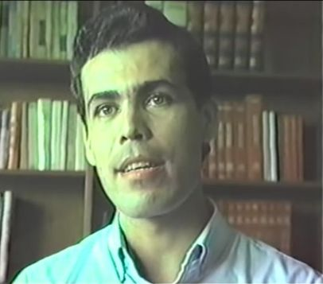
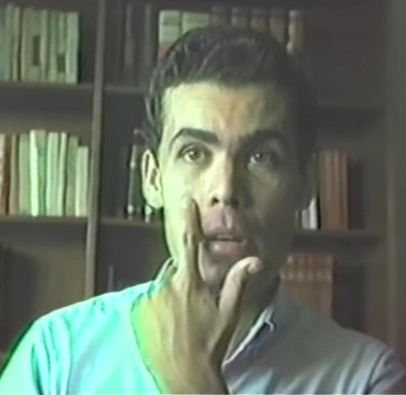
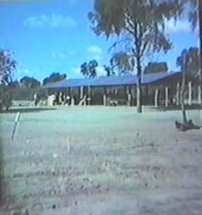
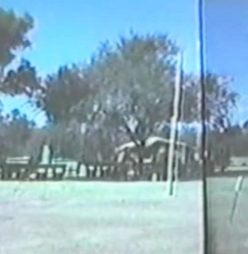
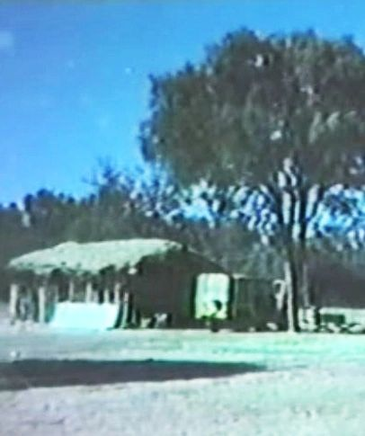
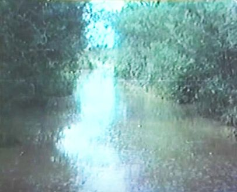
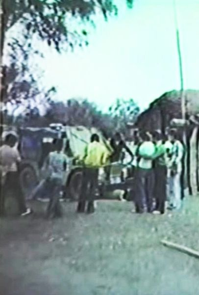

The unique and developing history
of the Nivaclé communities
descending from Mistolar
[Wilfrido Ozuna (quien falleció en 2006) se entrevistó en 1989 por Néstor Curbelo, quien ha amablemente permitido la transcripción, traducción, y presentación de la entrevista aquí.]
Néstor Curbelo: Hoy es el 21 de Octubre, 1989. Estamos en el Instituto de Religión de Asunción, Paraguay. Y el propósito es hacer una entrevista, una historia oral con un ex misionero que sirvió en Mistolar. Así que comienzo con preguntarte tu nombre otra vez.
Wilfrido Ozuna: Mi nombre es Wilfrido Guzmán Ozuna Acuña.

Curbelo: ¿Y cuanto tiempo hace que estás en la Iglesia, Wilfrido?
Ozuna: Justamente, este mes de Octubre, hizo 13 años que me bauticé.
Curbelo: Trece años. ¿Tu familia es miembro de la Iglesia, o solamente vos? ¿Tu familia también?
Ozuna: Si. Toda mi familia inmediata, es miembro de la Iglesia, mis padres, mis hermanos, en realidad somos una familia no muy numerosa. Todos son miembros de la Iglesia.
Curbelo: ¿Y cuál ha sido tu experiencia en la educación, qué has seguido? ¿Has estudiado, estás trabajando, cuál es tu situación?
Ozuna: Si, estudié matemáticas. Ahora estoy estudiando ingeniería electrónica. Y, me dedico a la enseñanza, seguía matemática en mi casa. Estoy estudiando electrónica.
Curbelo: ¿Estás casado ahora, o todavía estás soltero?
Ozuna: Soltero.
Curbelo: Bueno, muy bien. En esta ocasión no nos vamos a dedicar mucho a los aspectos de tu propia vida y experiencia. Sino nos vamos a concentrar en estos dos, en estos tres meses de tu servicio en Mistolar como misionero. ¿Con qué presidente de misión serviste?
Ozuna: Presidente Bair, Mearl K. Bair, y el Presidente Quinn.
Curbelo: Presidente Quinn. En que período, vos recién me mencionaste la fecha de servicio misional. ¿Cuándo empezaste y cuándo terminaste?
Ozuna: ¿La misión?
Curbelo: Sí.
Ozuna: En Junio, el 13 de Junio del 79. Yo terminé el 24 de Junio del 81.
Curbelo: Rápidamente, ¿cuál fue tu recurrido en la misión?
Ozuna: Primeramente estuve en Caaguazú una semana, 6 meses en Ypacaraí, estuve 2 meses en Barrero Grande. Tuve el privilegio de servir de misionero en esa zona, aquí en Paraguay. Y después fui a Arroyos y Esteros 9 meses, 5 meses en Villa Rica, y dos meses y medio en Mistolar.
Curbelo: ¿Mistolar fue tu último lugar?
Ozuna: Mi último lugar, exacto.
Curbelo: Muy bien. ¿Cómo fueron tus sentimientos en la ocasión en que recibiste el traslado a Mistolar?
Ozuna: Y, realmente, fue una sorpresa. Tenía como dos meses y medio antes de terminar mi misión. Pensaba que en Villa Rica iba a terminar. Y fue grande la sorpresa cuando el presidente de misión me dijo, personalmente me llamó, y me dijo que tenía que ir urgente a Asunción, porque tenía un cambio. Fui llamado como líder de zona, y a la vez, como misionero a Mistolar, un lugar donde todos los misioneros en la misión en ese tiempo queríamos ir. Y realmente me sentí muy, pero muy feliz.
Curbelo: ¿Cuál era la opinión de los misioneros en esa época acerca de Mistolar? ¿Cómo consideraban Mistolar?
Ozuna: Y, en mi opinión, era un lugar en donde iban a tener un tipo de experiencia diferente, por el lugar mismo, que prácticamente no estaba habitado, y todo eso. Y pienso que a todos los jóvenes más o menos de esa edad nos gustaban un poco las cosas nuevas, aventuras. Pienso que esa razón hacía que todos queríamos ir ahí. Pero pienso que una de las razones principales era el hecho de que los que estaban ahí, los dos compañeros, Élderes Blosil y Loynd, tenían muchos bautismos. Y como todos queríamos bautizar una buena cantidad de personas, nos interesaba ir ahí.
Curbelo: ¿Podrías describir un poco cómo sucedió tu traslado? ¿Estuvistes en Asunción? ¿Cómo viajastes a Mistolar?
Ozuna: Era un domingo, 20 creo que es, 20 de abril del 81, y recibí una llamada. El presidente me dijo que tenía que venir a Asunción, porque estaba trabajando en Villa Rica, lo más urgente posible. Que el martes yo tenía que salir para Mistolar. Y lo interesante fue que era la Semana Santa, finalizaba la Semana Santa, era el lunes de Pascua, y toda la gente venía a Asunción. Y era muy difícil encontrar un lugar, un colectivo para poder venir. Y tuvimos que venir parados, con mi compañero, con todas mis cosas. Y también toda mi ropa estaba mojada. La señora que lavaba era miembro de la iglesia. Tuve que ir y ponerla en una bolsa así como estaba, y cargaba en mi valija, lo que hizo que sea más pesado todavía, y vinimos corriendo. Llegamos el lunes a la tarde, y a la mañana teníamos que partir para Mistolar. Y recuerdo que he visto mi nombre ahí, que era un nuevo líder de zona, una zona que incluía Mistolar justamente. Y, realmente me sentí feliz. Le conocí al Élder Blosil. Y al día siguiente partimos para Mistolar con el jeep, el famoso Daihatsu.
Curbelo: Y, los misioneros de Mistolar, ¿venían frecuentemente a Asunción en ese tiempo?
Ozuna: Si. Solían venir. Frecuentemente.
Curbelo: ¿Tenían un vehículo a su cargo?
Ozuna: Exacto.
Curbelo: Ah, esa era la razón de que se les facilitaban las cosas.
Ozuna: Fue un vehículo exclusivamente para el Chaco.
Curbelo: ¿Podrías seguir describiendo cómo fue tu traslado, qué fueron tus impresiones cuando empezaste a andar por ese camino? Inclusive describir el camino, el lugar, y algo más.
Ozuna: Perfecto. Salimos a la una más o menos de la tarde del 22. Puedo estar equivocado, pero creo que es el 22 o 21 de abril. A la tardecita llegamos a una de las colonias menonitas, Filadelfia, que está a 570 kilómetros de Asunción más o menos. Estuvimos en el hotel esa noche, y al día siguiente en la mañana temprano partimos para Mistolar. Yo estaba muy gozoso por la experiencia que ya estaba teniendo, y que estaba seguro también se acercaba.
Curbelo: La tierra, el polvo del chaco, y el sol.
Ozuna: Si, y, por el camino, mi compañero me contaba que tuvieron una experiencia, o sea el Élder Blosil me contaba a mí que con Élder Loynd tuvieron una experiencia el setiembre pasado, o sea en setiembre del 80, que era el Rally del Chaco. Y ellos estaban viniendo para Asunción, y se metieron en el rally, y todo eso. Y, entonces, después llegamos, casi al obscurecer más o menos, creo que 10 horas casi de viaje. Y después de haber terminado mi misión me di cuenta del peligro que nosotros corríamos, y que nosotros, no sé por qué razón, no veíamos eso, no teníamos miedo. Teníamos nuestra mente, nuestra misión, en lo que íbamos a hacer allá, y no teníamos miedo. Supongo que a cien kilómetros a la redonda no había gente, y nadie podía socorrernos si nos pasaba algo.
Curbelo: ¿Qué son los peligros más comunes en Mistolar, para una persona? ¿Qué tipo de peligros puedes identificar?
Ozuna: Si por alguna razón el jeep, le pasa algo, y no podemos continuar viaje, tendríamos que quedarnos y estar un buen tiempo ahí hasta no sé cuando, alguien para darnos de socorro. Y tendríamos que, o sea, sobrevivir en ese lugar en donde había muy poca agua, y la poca agua que había era agua de laguna, probablemente contaminada. Y, yo nunca viví en un lugar como eso, y pienso que mi compañero tampoco, porque él era de San Francisco, en California. Y no sabemos, ninguno de los dos sabíamos cómo sobrevivir en un lugar de selva, vamos a decir. Uno. Habían animales salvajes. Vimos algunos tigres, aquí le llamamos jaguareté, es un tigre americano. Pumas, y más que eso había un montón de víboras, que eran muy peligrosas.
Curbelo: ¿Qué tipo de víboras?
Ozuna: Y, yo llegue a ver en una oportunidad en una noche lo que comúnmente se conoce como boa, creo en castellano. En Guaraní tiene un nombre especial, no recuerdo también ahora en Guaraní. Y también, cascabel, víbora de cascabel. Y la otra viborita, esa que tenia tantos colores. Y pienso que de esa yo tenía más miedo que cualquier otra cosa.
Curbelo: ¿Hay algún tipo de animales en la región que pueda atacar sin ser hostigado por el hombre?
Ozuna: Pienso que no. El tigre, puede ser, si tiene hambre. Pero por lo menos en los alrededores de Mistolar no había ese tipo de animales. Más bien el jabalí. Puede ser, en una oportunidad he visto un jabalí, y era bastante peligroso, y recuerdo que el hermano Flores nos llamo, y nos dijo que nos apartáramos de ese lugar. En ese sentido, había peligro. Por suerte, pienso que en el tiempo que yo estuve, mi Padre Celestial me protegió bastante. No pasé ningún tipo de peligro raro.
Curbelo: Y, muy bien. Llegastes a Mistolar. ¿Qué impresión, qué sentiste cuando llegastes ahí, viste los chozas, la capilla que necesitaban construir en ese tiempo, cuál fue tu impresión?
Ozuna: Y, pensé que en Asunción, gente que vive en un lugar conocido acá como la Chacarita, viven, y son muy pobres, su casa y todo eso, y decimos que están en una miseria, etc., pero cuando los vi a ellos, y los compare con esta gente que vivía acá en Asunción y que dicen ser muy pobres, muy humildes, que no tienen tanto, comparado con ellos, los que viven acá prácticamente eran ricos. Ahí me di cuenta que realmente existe pobreza. Me refiero a lo temporal. Porque después me di cuenta que en cuanto a lo espiritual, realmente eran muy ricos.
Después, me llamó la atención el olor a pescado. Era impresionante. Kilómetros antes de llegar, yo podía sentir eso. Porque, en la época, desde más o menos abril o mayo hasta setiembre u octubre, ellos comían casi exclusivamente pescado. Eran el dorado, surubí, y un pescado de nombre, a ver, poga? Y se alimentaban casi durante cuatro o cinco meses exclusivamente casi de pescado. Entonces, todos ellos tenían esa aroma especial. Y nosotros que no habíamos comido nada de pescado, podíamos sentir. En cambio ellos no.
Cuando yo llegué, 400 de los hermanos me pasaron la mano. Pararon en fila, y cada uno de ellos me recibió, diciéndome “lhnam”, que es el equivalente al “hola”, más o menos en castellano. Y me enseñaron que tenía que responder “janam”, que también era el equivalente del “hola”, pero el que llega dice “janam”, y el que está recibiendo a la gente dice “lhnam”. Y todos me dijeron eso. Yo tenía que responder, y decir “muy bien” que más o menos es “tajulhey”, ellos te dicen. Y a los 400 les pase la mano, y el espíritu que sentí era realmente impresionante. Ahí empecé a llorar ya. Porque varias veces sentí el espíritu, y sentí que eran hijos de Dios, que realmente nuestro Padre Celestial estaba ahí, que no pude contenerme, y demostrar mi gozo y mi alegría con las lagrimas. Y recuerdo muy bien esa oportunidad. Y después tuve que llevar mi brazo más o menos así, porque a los 400 tenía que pasarles la mano.

Curbelo: Wilfrido, ¿Puedes describir un poco cómo se instalaron? Yo estuve en un lugar, no en el lugar donde vos fuiste, pero sí un lugar supongo yo similar. ¿Cómo se desarrolló, digamos, temporalmente, físicamente, tu estadía en Mistolar?
Ozuna: Bueno. No sé si viste las fotos. Hay unas chozitas ahí de troncos de árboles.
Curbelo: Verticales.
Ozuna: Exacto. Y con el techo con ramas y barro. Bueno. Una de esas chozitas era para nosotros. Cuando yo llegué, aún hacía calor, en abril del 81. Y recuerdo que no dormimos en esa chozita. Yo tenía una mesa, y un banco mi compañero. Y dormimos bajo un árbol durante varias semanas. Después, como habrás visto la capilla, con tablas se cerró una partecita, y ese se instaló para nuestro cuarto. Y mayormente dormimos ahí, o sea, en cuanto al hospedaje.
Curbelo: ¿Cómo comían, cómo se organizaban con la comida? Porque las condiciones de los que estamos toda la vida en la ciudad son muy diferentes a las que son las costumbres y las posibilidades del lugar. ¿Cómo se organizaban con sus comidas y sus cosas diarias?
Ozuna: En cuanto a la comida, mi compañero y yo llevábamos cosas enlatadas. En cuanto a panificados llevábamos esas galletas chiquitas que le llamamos coquitos acá. Y llevábamos fideos, y una salsita enlatada, a veces hacíamos un tallecito. Pero mayormente, comíamos con ellos pescado. Y también unos zapallitos silvestres que solíamos hervir y comer así, aprendí a comer así, sin sal, nada, directamente, zapallito hervido. Y aprendí a comer el pescado, cosa que no me gustaba tanto.
Pero aún más que comer me enseñaron el esqueleto, como era el pescado, en donde los huesecitos eran más grandes, más gruesos, y donde eran más finitos y más peligrosos. Y recuerdo que la primera noche que estuve ahí me comí uno entero, y lo hice casi en tres horas, porque tenía mucho miedo de las espinas. Después, al terminar mi misión casi, recuerdo que lo hice en un tiempo menor, aprendí a comerlo.
Y algo, refiriéndome a comer pescado, me acuerdo. Había visto una familia, estaban comiendo, y tenían un pequeñito de dos años. Nadie le hacía caso a él, “Tené cuidado con las espinitas”, nada. Él solo, y ellos me dijeron que nunca, en la historia de ellos, nadie murió o tuvo problemas con que se haya atragantado con una espinita. Y me llamo la atención eso. Y me dije a mí mismo “Sin duda nuestro Padre Celestial cuida a esta gente”.
Curbelo: Muy bien. ¿Cómo, en qué grado ustedes participaban en la vida cotidiana de ellos? ¿Iban a comer en sus chozas, y comían con ellos, participaban con todas sus cosas, o, simplemente recibían algunos alimentos cocidos?
Ozuna: Mayormente comíamos en nuestra chozita con mi compañero. Un hermano de ellos, indígena, que era Nicodemo y otro también, venían y ellos mismos nos preparaban todo lo referente al pescado. Un caldito de pescado, un asadito a pescado, parrilla, o al asador, como solían hacer ellos. Ellos preparaban, no preparábamos nosotros.
Curbelo: ¿La comida llegaba a ser sabrosa, o era suficiente para subsistir y nada más?
Ozuna: Es increíble, pero, el caldo a pescado solamente tenía agua, sal, y pescado. Y para mí era lo más rico. Si yo ahora voy a comer eso probablemente no me va a gustar. Yo me pregunto “Será porque tenía hambre, por eso me gustaba tanto y me era tan rico?” No sé, pero era lo más sabroso para mí.
Curbelo: ¿De dónde sacaban el agua? Porque el agua de ahí es agua con tierra, digamos. No digo potable.
Ozuna: Si, agua con tierra. Aquí esta.

Esto es una muestra de productos químicos que nosotros usábamos para poder purificar el agua. Creo que, yo no entendía muy bien, es mi compañero que mas sí, pero ya había dejado esto, como un recuerdo. Usábamos sulfato de aluminio creo para bajar el barro, porque el agua de la laguna era de color marrón, totalmente marrón…
Curbelo: Si si, yo lo vi ayer, no, anteayer, muy, realmente es…
Ozuna: Ellos lo tomaban así. No se enfermaron, creo. Ahora nosotros teníamos consejos del presidente de la misión, usábamos esto. Y con estos productos químicos hacíamos que el barro bajara un poquito más, y tomábamos el agua que quedaba arriba, y le poníamos, creo que es cloro, sí, para purificar un poco. Y yo y mi compañero tomábamos esa agua.
En otra oportunidad tomé también el agua que ellos tomaban. Creo que se nos terminó ya, yo no entendía muy bien el procedimiento. Entonces tomé y no me pasó nada.
Curbelo: Muy bien. ¿Podrías describir un poco cómo era un día típico de trabajo de misionero en Mistolar?
Ozuna: Sí, como no. Muy diferente al trabajo que normalmente los misioneros hacen aquí en la misión en la capital, en el interior del país y en otros lugares. Había como 500 personas más o menos, unas 75 familias creo yo, en ese tiempo. Normalmente lo que hacíamos es recorrer las familias con el presidente de la rama. El me mostraba a mí, cuando yo estuve ahí, las familias que eran miembros de la Iglesia y las que no eran. Y me mostraba los chicos que tenían la edad ya de bautizarse, los que todavía no eran miembros. Y también los mayores que no eran miembros, yo les visitaba a sus casas. Y les invitaba para recibir una charla, para escuchar algo acerca de las cosas de Dios. Mayormente las mujeres no hablaban castellano. Los ancianos tampoco hablaban el español. Los jóvenes hablaban más o menos. Entonces siempre estaba acompañado del presidente de la rama, hermano Isprond…
Curbelo: ¿Cómo es el nombre del presidente de la rama, el primer presidente?
Ozuna: Isprond. Tolerito era el apellido. En cuanto a nombres también es toda una historia. Porque tenían nombres raros, a veces un apellido era el nombre de uno de los jóvenes. Un ejemplo típico: Uno de ellos se llamaba, o sea le pusieron por nombre, Gonzalez. Un apellido. Ahora, el papá de Gonzalez se llamaba Pancho. Entonces, en un registro de la Iglesia aparece Gonzalez Pancho por ser Gonzalez el hijo de Pancho. O sea que toda una historia en cuanto a los nombres.
Y visitamos, como iba diciendo, las familias, y los reunía a la tardecita a un grupo grande, con mi compañero, y les enseñábamos las charlas. Cuando estaba el hermano Flores, él era el traductor. Cuando no, un hermano de nombre Nicodemo, que hablaba muy bien el castellano también, o el presidente de la rama. Entonces nosotros enseñábamos con las famosas láminas de antes, grandes…
Curbelo: Con la pirámide, cuando se cae la iglesia, y todo eso.
Ozuna: Si si, exacto.
Curbelo: Los 3 grados de gloria, esas charlas.
Ozuna: Si. Cuando las charlas tenían letras todavía, la charla A, B, C era la primera visión, la charla D acerca del plan de salvación, etc. Y traducía el hermano, y al final de la charla todos hacíamos una oración, y cada uno se iba a sus respectivos hogares, y al día siguiente a la tardecita volvían otra vez. Así que era bastante diferente la actividad que nosotros teníamos comparado con los misioneros que trabajaban…
Curbelo: Y durante el resto del día, ¿qué cosas hacían?
Ozuna: Y, para no estar, como Mistolar no era tan grande, para no estar en mi chozita, yo personalmente visitaba las familias. Yo recuerdo, y procuré desarrollar mi fe en una oportunidad, porque algunos de los hermanos tenían tuberculosis. Y nosotros teníamos que estar todos vacunados antes de irnos allá. Y recuerdo, me invitaron a tomar mate. Y en el preciso instante en que me lo dieron, un hermano con tanta amabilidad y con una sonrisa, a los labios, me vino a la mente la enfermedad, y tuve miedo. Pero en ese plazo de tiempo tan corto yo tenía que decidir rechazarlo y quizás, no sé, ofender a la familia, o aceptarlo. Entonces me dije dentro de mí, “Padre, por favor, bendice esto”. Y yo tomaba mate con ellos, repartía con ellos, estaba muy de cerca. Comía a veces en su casa. Y siempre yo estuve muy de cerca, visitando las familias, etc., y hablando de la Iglesia con ellos. Siempre me acompañaba alguien que podía traducir.
Curbelo: ¿Qué historias y comentarios recibiste del Élder Blosil, que fue entre los primeros que fueron a Mistolar?
Ozuna: El Élder Blosil estuvo más de un año, el misionero que estuvo más tiempo entre ellos.
Curbelo: ¿Qué tipo de persona era?
Ozuna: No hablaba mucho. Era bastante callado. Cuando me dijo el presidente que iba a ser mi compañero, yo dije, “Cómo será estar con él? Porque es callado.” Simple, le conocía así, apenas me saludaba. Y pensé, veremos cómo anda nuestro compañerismo, porque mucho tiempo vamos a estar solos, nosotros dos, y necesariamente tenemos que hablar. Y después me di cuenta que no era como aparecía. Era una persona muy especial, y, me contó muchas veces de su vida en San Francisco, era corredor, creo que, sea aficionado, quería, le gustaba carrera autos. Y era un muchacho que le gustaba trabajar, y no le gustaba estar así, sin hacer nada. Me enseño muchísimas cosas. Y me contó acerca de las experiencias bautismales que tuvieron. Y me dio su testimonio, sentí un buen espíritu acerca de él. Y creció un amor muy grande hacia él.
Curbelo: ¿Cómo percibiste vos el sentimiento de los miembros de Mistolar hacia estos dos misioneros, los dos primeros misioneros, Blosil y Loynd?
Ozuna: No sé, a Loynd, lo conocí poco. De lo poco que me contó Élder Blosil, nada más sé del Élder Loynd. De lo que sí sé, lo conocí antes a Élder Loynd, antes de que vaya a Mistolar, lo vi a un joven muy disciplinado. Procuré tomarlo como ejemplo. Yo en la misión, en los primeros días especialmente, no era demasiado disciplinado. Por inspiración el presidente me dio como compañero, compañero muy disciplinado, para ayudarme en eso. Y en verdad lo conocí muy poco. Pero a Blosil un poco más o menos. Y no sé realmente como habrán sido ellos. Pero la gente les recuerda muy bien a ellos. Los tienen en un lugar muy especial de sus corazones. Cuando yo hablo con algunos de los hermanos que suelen venir acá, siempre se acuerdan de los dos. Pienso que ellos fueron los que bautizaron más también.
Curbelo: Los servicios bautismales, son muy personales, muy particulares. ¿Cuáles son las bendiciones que se pronunciaron más en las confirmaciones? ¿Qué son las cosas comunes que te vienen a la mente que fueron prometidas?
Ozuna: Lo que recuerdo es que muy pocas veces nos sentimos, no sé, inspirados a hablar demasiado. Yo no sé si por el tiempo, por la cantidad de hermanos que se bautizaron, pero normalmente, cuando imponíamos las manos para dar el Espíritu Santo, lo hacíamos bastante corto. Pienso mayormente hablábamos de que reciban bendiciones de acuerdo a su fidelidad. Y nada más, lo terminamos en el nombre de Jesucristo. O sea, no agregábamos demasiado. Cuando yo estuve, vi veinte bautismos, nada más. Ahora, en las experiencias que tuvieron Élder Loynd y Élder Blosil con los 200 y algo de bautismos que ellos tuvieron, yo no sabría decir. Pero si, puedo decir con los 20 que nosotros tuvimos, recuerdo que a algunos de los hermanos, Élder Blosil creo, dio algunas bendiciones a uno o dos que se bautizaron, que eran jovencitos. Yo no recuerdo muy bien, pero, yo lo hice muy cortito. Yo no sé, no me sentía inspirado, nada más.
Curbelo: Muy bien. ¿Algo mas, quizás de estos dos meses y medio, alguna cosa más, hecho importante que haya sucedido que te parezcan hechos históricos?
Ozuna: Los servicios bautismales, puede ser. Cuando yo estuve teníamos ya una pileta. Era una de esas, como un cajón de fibra de vidrio, que cargábamos del río Pilcomayo. Antes se hacía en el río. Cuando yo estuve, habían llevado ya una de esas, como un tambor gigante.
Curbelo: ¿Instalaron en el piso, o la dejaron a nivel de la tierra?
Ozuna: Lo dejamos a nivel de la tierra. Y yo eso me pregunto por el bautismo, ya se simboliza la sepultura y todo eso, igualmente estaba a nivel de la tierra. Pero en esta ocasión, no sé por qué razón, no cavamos ningún pozo.
Recuerdo bien que dos grados más o menos era la temperatura, era al aire libre, y a pesar de que estaba temblando del frío, sentí un espíritu muy especial, al ver como formaban fila, cosa que normalmente aquí en Asunción nunca había visto. Y bauticé como cinco o seis seguidos, salí del agua, mi compañero hizo lo mismo. Después entro un hermano, bautizó a dos de sus hijos creo, que era ya uno de los hermanos Lamanitas. Después salió él, y yo estaba temblando del frío ya afuera, que estaba todo mojado, volví entrar y bauticé otros cuatro más o menos. Y creo que fue una de las experiencias más significativas del tiempo que yo estuve allí.
También, tuve una experiencia con una jovencita que, creo ahora tendrá sus 15 años más o menos, en ese tiempo tenía ocho. Recuerdo que cuando yo vine, me miró bien a los ojos, y me saludó, y me dijo “lhnam” – “hola”. Y con una sonrisa nos comunicábamos porque yo no entendía a ella y ella tampoco me entendía a mí. Y recuerdo que con los niños solía jugar, tenía libritos con algunas palabras en Nivaclé. No nos entendíamos casi, pero hacía algunos gestos raros que les gustaban mucho a los niños. Y recuerdo bien esta jovencita de ocho años, no sé, parece que me hizo a querer bastante, y ella pidió que yo le bautizara. Y le bauticé y todo eso.
Pero la ocurrencia más significativa fue cuando ella se enteró de que yo iba a volver a Asunción e iba a terminar mi misión. Y yo recuerdo que ya al terminar la reunión a la noche, estaba el presidente, que ahora es el presidente de la misión Antofagasta Chile, el presidente Carlos Espinola, hermano Aquino, hermano Muños de Argentina, etc. Sabían que ya el presidente Quinn terminaba la misión también. Y después de finalizar esa reunión, ella se acercó, me llamó así, me miró a los ojos, y casi con lagrimas en los ojos me dijo “pa’acum” que significa “chau”, ”adiós”.

Y yo sentí, no sé, ganas de llorar. Me aparté y me fui en un lugar más o menos obscuro, y empecé a llorar. Fue una de las experiencias bastante lindas que yo tuve allí, y siempre recuerdo a esa niña.
Curbelo: ¿Qué podrías comentar en cuanto a la vida familiar y tradicional de los Chulupí? ¿Cómo podrías describir la vida de la familia Chulupí hasta que conocieron la Iglesia, y después, como incorporan cosas de la Iglesia?
Ozuna: Lastimosamente, no sé como vivían antes. Cuando yo llegué, la mayoría de las familias eran miembros de la Iglesia, o sea las familias que yo conocía. Y puedo decir que había un amor muy grande entre ellos. Recuerdo una oportunidad, uno de los jóvenes, hijo del presidente de la rama, estaba separado por seis meses de la familia. Yo no sé a dónde. Después de esos seis, o no sé un año, volvió, y empezó a llorar la mamá, empezaron a llorar los hermanos, y él también. Y yo pensé que alguien falleció o algo. Y le pregunté al hermano Flores, porque me llamó la atención y me quedé sorprendido. Y me dijo “No te preocupes”, y me explicó él que era la manera en que ellos demostraban el gozo que sentían al volver a ver a sus seres queridos después de un tiempo de separación. Y pienso que, o sea, deduje de eso, que el amor que había entre ellos era bastante grande. Y otra cosa. Y esto quizás no solamente con la familia, pero podemos ya decir que si entre ellos que no eran precisamente hermanos de sangre se amaban tanto, me imagino que dentro de la familia se amaban aún mas.
Jugamos partido de vóley. Pude anotar que ellos nunca, pero nunca se pelearon, no se dijeron palabras o cosas así, no “¿Porque tiraste la pelota allá, porque no la tiraste a mí?” Cuando ellos juegan los deportes, disfrutan, siempre están sonrientes, gozosos.
Curbelo: Yo fuimos con Miguel Bogado, y el primer día de la noche que fuimos, jugamos el futbol con ellos. Porque yo juego en lugares, en la Argentina, en muchos lugares el futbol entre hermanos de la Iglesia, y siempre hay problemas, diferentes tipos, en fin, mal carácter, y cosas así que floran. Y me llamó la atención exactamente lo mismo, o sea, es que jugamos media hora o así, y ellos seguían jugando, pero no vi ni percibí ningún tipo de, sino de diversión, sonriendo, jugando con fuerte, cayera en el piso. Y también vi a los niños jugando, ahí en un patio grande, hay un lugar muy grande, muy extenso, y los niños corriendo, jugaban unos cuatro, cinco chicos tirando. Y como no entiendo el idioma, pero no percibí ningún momento, ningún tipo de mal sentimiento. No sé si quieres comentar algo más de…
Ozuna: Y si, pienso que vos lo dijiste, ese mismo sentimiento tuve yo. Me di cuenta de que aquí nosotros, cuando hay torneo entre barrios, todo eso, siempre hay disputas, discusiones, etc. Pude notar que en cierta manera, ellos están mucho mas, o sea son mas espirituales, han progresado en ese sentido mucho más que nosotros.
Curbelo: ¿Vistes algún tipo de discordia entre ellos, en el tiempo, los dos meses y medio?
Jamás. Por lo menos en el tiempo en que yo estuve, nunca he visto ningún tipo de discordia.
Curbelo: ¿Cuáles de los vicios y problemas y dificultades que tienen nuestros barrios, nuestras ramas, de discordia entre hermanos, de celos…? Son seres hermanos también con sus debilidades…
Ozuna: En el tiempo que estuve yo, en verdad, no, no pude ver nada de eso. Nada. Pienso también que son seres humanos, y todo eso, pero por lo menos en el tiempo en que yo estuve, todo era tan tranquilo. Algo interesante que aprendí de ellos, y lo comparé con el Libro de Mormón, es el hecho de que cuando ellos se conviertan, son tan fieles, como leemos del pueblo este de Laman, los Lamanitas, cuando se convirtieron eran tan fieles hasta el fin, y pude ver que ellos también son así.
Mi compañero, recuerdo que me dijo antes del llegar, “Todas las cosas que nosotros les enseñamos, ellos lo hacen. Pero todas las cosas que nosotros enseñamos, somos nosotros quienes tenemos que cumplir primeramente, o sea tenemos que ser el ejemplo. Vivir las cosas que decimos. Ellos nos ven y nos miran, y ven nuestro ejemplo, y dicen que fielmente van a seguirnos y hacer las cosas que nosotros decimos, siempre que nosotros también cumplamos con eso. Si ellos pueden ver que nosotros decimos algo, pero hacemos otra cosa, entonces pierden totalmente la confianza en nosotros. Esa es una característica especial de ellos.” Por eso siempre yo procuré demostrar las cosas que yo decía, tratar de, si yo hablaba del amor, entonces procuraba expresar mi amor a cada uno de ellos.
Curbelo: ¿Qué otra cosa observastes especialmente en estas recurridas que podías hacer de choza en choza, de familia a familia, en cuanto a la vida familiar, sus costumbres, su calidad moral, sus actitudes?
Ozuna: En cuanto al trato, por ejemplo, de padre a hijo, de hijo a madre, etc., no pude percibir nada especial, solo el hecho de que eran bastante obedientes, los hijos a sus padres.
Curbelo: Entiendo de que han crecido las dificultades por las inundaciones, y los cambios, los traslados de un lugar. O sea les hizo llegar a una estación más precaria. Y viendo las fotos que me acabas de mostrar, ahora las viviendas son más precarias, y todo, prácticamente están en tránsito en este momento. Realmente han vivido muchas dificultades después que hayan salido…
Muy bien. Ahora yo observé de que están los padres con sus chozas, los hijos casados con su choza muy cercana. Pero en cuanto a la orden familiar, ¿como eran tus observaciones?
Ozuna: Normalmente se casan jóvenes y se apartan, totalmente. Los mismos hijos que van a casarse construyen su casita y se apartan. No sé por qué razón no me fijé en esas detalles. Pero, lo que puedo decir es eso, que en un sentido sí se apartaban y vivían cada uno como familias.
Curbelo: ¿Cuáles eran los problemas más serios que aparecieron, o mas frecuentes que aparecían, entre los miembros de la rama? Hasta que vos tuviste conocimiento.
Ozuna: Con los muy jovencitos, de 8 en adelante hasta 12, 13, 14 años pienso, no habían tantos problemas. Con los jóvenes de 17 o 18 años en adelante, los que no eran miembros de la Iglesia cuando yo estaba en Mistolar, les gustaba fumar. Aprendieron en Filadelfia, en donde estaban antes de ir ahí, y les gustaba tomar también bebidas alcohólicas. Especialmente estos dos eran los problemas principales por lo que estos jóvenes no eran todavía miembros de la Iglesia. Y en cuanto a la ley de castidad, por lo menos las entrevistas que yo tuve, porque hable con jovencitos y con personas mayores y adultas, y aparentemente no habían problemas.
Muchos de ellos ni iban identificados, o sea que no tenían un documento que los identificaban como un individuo que vive en una sociedad organizada. Entonces cuando ellos se casaban, por ejemplo, en realidad no estaban casados por la ley del país. Pero no sé como la Iglesia soluciono, pienso que un caso especial, y se consideró como un, casi un país aparte.
Curbelo: ¿Los Chulupi tienen una ley no escrita del matrimonio? O sea, ¿hay una manera en que una joven y un joven llegan al casamiento ya, no dirigido por la ley de la nación Paraguaya, sino por las costumbres y tradiciones de un grupo étnico? ¿Hay una ley escrita, una manera de que casarse?
Ozuna: Puede ser. Cuando se iba a casar el hermano Arenas, justamente, al presidente Isprond le expliqué, le dije que el matrimonio es por la eternidad, y que el lugar en donde son sellados una pareja por toda la eternidad es en el templo. Y el entendió eso. Y le dije que cuando no se puede ir al templo, en las capillas el presidente de la rama puede hablarles y darles como una bendición. Y él hizo eso.
Pero yo no sé como lo hacían antes. Lo que si también sé, en cuanto a la legalidad del matrimonio, para ver que realmente fulano y fulana son casados legalmente entre ellos, creo que lo que hacían es elegir de los hombres más destacados, padres de familia. No sé si llamar ‘cacique’, no sé si en esa manera estaban organizados, porque casi no escuché ese nombre. Pero de los hombres más prominentes del pueblito, hacían de testigos de que el hermano Arenas y la hermana Tolerito realmente son casados. O sea que eso sería como la ley civil nuestra.
Curbelo: ¿O sea que había un hecho, un acontecimiento, o una ceremonia que señalaba un matrimonio?
Ozuna: Es como si tuvieran testigos. Entonces estas personas pueden dar testimonio de que ellos son una pareja, son casados. Y de que si él intenta tener otra mujer, entonces hay testigos de que él en realidad está casado con otra. Así que si eso hace, está cometiendo un engaño.
Curbelo: ¿Pudistes conocer o captar algo de cuál, cómo es la manera de cortejo, lo que nosotros llamamos cortejo, o sea, la preparación para el matrimonio de la pareja?
Ozuna: No pude ver. Cuando me contaron que el hermano Arenas se iba a casar ya, ni sabía que la hija del presidente era su novia. No sé nada. Fue algo, una sorpresa realmente para mí. Es que estuve tan poco tiempo también, y mayormente estuvimos, o sea muchas veces vinimos a Asunción, hasta que en dos meses y medio había estado allá apenas dos semanas. Tres quizás, tres semanas. Y después, porque yo y mi compañero éramos líderes de zona, teníamos que venir a Villa Hayes, a Arroyos y Esteros, a Loma Pýta, otras áreas también, y teníamos también que visitar, todas esas cosas. Veníamos a Asunción. Y si puedo contar el tiempo exacto donde estuve allá, podía ser que estuve tres o cuatro semanas como máximo.
Curbelo: ¿Cómo vestían cuando estaban en Mistolar?
Ozuna: Mi compañero y yo teníamos botitas. Yo recuerdo que compré de Filadelfia un jean, pantalón vaquero como le decimos acá, una camisa cuadros, y acá tengo una foto de mi compañero.
Curbelo: En seguida vamos a revisar las fotos. Muy bien. En cuanto a tu recorrida por las chozas, ¿Qué otra cosa pudiste captar de ellos? ¿Qué otra cosa te llamó la atención?
Ozuna: Puede ser el hecho de que las chozas tenían aberturas, no estaban muy juntas. Entonces hacia mucho frio, había viento, y dormían en el suelo. Y no sé cómo no se congelaban, porque no tenían mucha ropa. Algunos niños recuerdo, a la mañana temprano, porque había una escuelita, venían a la escuela con un pantaloncito no más, y la temperatura es cero, o un grado, y algunos tenían apenas una camisita, ni siquiera mangas largas tenían. Y a la noche hacía más frio. Dormían en el suelo. Algunos tenían, este, lo que nosotros llamamos aquí en Paraguay vacapí, sería el cuero de la vaca, sobre la tierra misma. Y familias grandes de, no sé, ocho, nueve, o diez dormían en una chozita. Y recuerdo que tenían que mantener el fuego, muchas de las familias mantenían fuego durante toda la noche, uno de la familia tenía que estar cuidando. Pienso que no morían justamente porque había suficiente oxígeno por las aberturas de la choza. Porque a lo contrario estaba bien cerrado. Y me llamo la atención porque, no sé, podían soportar el frio, y, no sé, me sentía bastante triste, quería hacer algo para que estuvieran mas cómodos. O sea, es una de las cosas que me llamó bastante la atención.
Curbelo: Vamos a hacer una explicación de la fotos, ¿que parece? Estamos viendo esta foto.

Mistolar, o sea, diríamos del centro donde estaba la capilla de Mistolar cuando yo estuve en el 81.
Curbelo: ¿Este es el primer lugar del asentamiento, o sea, esto fue el lugar donde Élder Blosil y Élder Loynd bautizaron?
Ozuna: Si, exacto.
Curbelo: Antes que tuviesen ninguna inundación.
Ozuna: Exacto, antes.
Curbelo: Esta capilla, ¿qué sabes de la edificación de esta capilla, o perdón, de este centro de reuniones?
Ozuna: Bueno, sé que estas chapas, no sé exactamente de dónde se llevó, pero lo único que se llevó creo. Después, esto lo hicieron armar de allí, son troncos de árboles, y el hermano Flores y ellos mismos…
Curbelo: Cuando hablamos del hermano Flores, que es Walter Flores.
Ozuna: Hermano Walter Flores. Y yo estuve prácticamente presente durante la construcción, casi completa de este centro de reuniones.
Curbelo: Este centro de reuniones, ¿se hizo bajo la dirección del hermano Walter Flores?
Ozuna: Creo que sí. Si es que había otro hermano que estaba dirigiendo, no recuerdo. Pero pienso que él principalmente.

Esta casita, porque aquí en los alrededores estaban las chozas de los hermanos, esta casita es donde se guardaban los víveres. Eso tenía yerba, sal, azúcar creo, y pienso que era lo único. Si había algo mas, no recuerdo.
Curbelo: ¿Para todo el grupo, o para ustedes?
Ozuna: No, para el grupo. Estos eran muebles. Moroni era una escuelita antes, una escuela, y casi todos los muebles, asillitas etc., de Moroni se habían llevado a Mistolar.
Curbelo: O sea, de ese lugar, barrio de Moroni en Asunción, llevaron elementos que estaban, entiendo yo, en, como se dice, en desuso.
Ozuna: Exacto.
Curbelo: A Mistolar, ¿no? Muy bien. ¿Hay algún otro comentario en cuanto a esta foto, y la escena que estamos viendo?

Ozuna: En esta chozita yo y mi compañero dormíamos. Cuando hacía calor quedamos bajo este árbol.
Curbelo: ¿Foto a la izquierda?

Ozuna: El camino típico a Mistolar, casi los 300 creo kilómetros, 280, no sé cuantos exactamente, desde las colonias Menonitas, de Filadelfia hasta el Pilcomayo, mayormente eran, no tanto así verdad, pero gran parte, cuando llovía, el camino estaba en esa forma.
Curbelo: ¿Quién es ese que está en la foto al lado?

Ozuna: Élder Blosil, mi compañero. Quizás podamos pensar que él se tiró al suelo para ensuciarse así como está. Pero en realidad, los dos estamos sentados en el jeep, y apenas estamos a mitad del camino cuando estábamos sucios por el polvo que se levantaba. Podemos ver también que la tierra parecía a harina.

Parece que es una laguna. Pero en realidad es el camino. Tuvimos la oportunidad de viajar durante tiempo de lluvia, y podemos decir que nuestro jeep era un campeón. Y pasamos por aquí y no nos quedamos.
Curbelo: Este lugar de camino, ¿a cuántos kilómetros aproximadamente de Mistolar está?
Ozuna: Y, no podría decir exactamente, pero habrá sido, no sé, era por la mitad del camino de las colonias menonitas a Mistolar.
Curbelo: O sea 150 kilómetros.
Ozuna: Podría ser.

Y es uno de los tantos lugares del Chaco, parte del camino para llegar a Mistolar, estábamos yendo, y en esta parte había una lagunita, era bastante peligrosa, peligrosa en el sentido de que podíamos quedarnos. Y no había árboles tan cerca para usar el molinete. Entonces, yo me baje, mi compañero también, y miramos un poquito primero por donde exactamente el podía llevar el jeep para que no tuviéramos un inconveniente.

Y en la foto a la derecha vemos a un camión, once trece. Recuerdo que el hermano Vitale había pagado 150 mil guaraníes al dueño del camión para llevar los muebles que habíamos visto anteriormente. Y en este lugar este camión no pudo pasar. Y entonces mi compañero fue, intentó ayudar al camión, pero no pudimos pasar. O sea que aquel camión se quedó, volvimos a Mistolar, que estaba como a 40 km más o menos de allí, llevamos a unos hermanos con hachas y machete y todo eso, y ellos vinieron con mi compañero, hicieron un nuevo camino por el monte para que este camión pueda pasar. Eso era como a las dos de la tarde más o menos, y el camión recuerdo que llegó a las doce del día siguiente, con varias experiencias similares.

El vehículo es el jeep Suzuki del hermano Flores, él que usaba el hermano Flores, Walter Flores, y tenía algunos inconvenientes. Podemos decir que varios de los hermanos de ese lugar tenían talentos en cuanto a mecánica, algunos eran constructores, hermano Flores sabía hacer de todo un poco, y ellos mismos se estaban encargando de repararlo, ponerlo en condiciones para el viaje.
Curbelo: ¿A quién pertenecía este vehículo?
Ozuna: Pienso que la misión. Si, solamente que el hermano Flores y su familia lo utilizaban exclusivamente. Pero era una diversión.
Curbelo: Muy bien. ¿Qué vemos en la foto de la derecha?

Ozuna: Y es una chozita típica de los hermanos de Mistolar, y no se ven muchas casitas aparentemente, pero están metidos dentro ahí donde hay más árboles. Podíamos decir que esa es la calle principal de Mistolar. Porque los hermanos más o menos vivían en los costados de este camino que iba al Rio Pilcomayo directamente. El río estaba más o menos a un kilometro de aquí. Y los hermanos vivían a lo largo de este camino.

Una choza típica de las familias de Mistolar. Podemos ver algunos chicos. No recuerdo la casa de qué familia exactamente es. Pero todas las chozitas son similares.
Curbelo: En tu opinión, ¿porqué ellos no construyen mejores viviendas? ¿Porque no tienen los medios, porque no ven la necesidad, o porque no lo saben hacer?
Ozuna: Y, no sé si no sabrán hacer, porque hay algunos que tienen talentos que trabajaban en construcción, probablemente con los Menonitas. Pero no sé porque. En realidad, medios no tienen, o sea materiales no tienen para hacer algo mejor. Pero, porque tienen solamente los árboles, y el barro, y nada más. Si se les provee materiales, no sé si sabrían construir algo mejor, o necesitan ayuda de gente.
[Final del video]